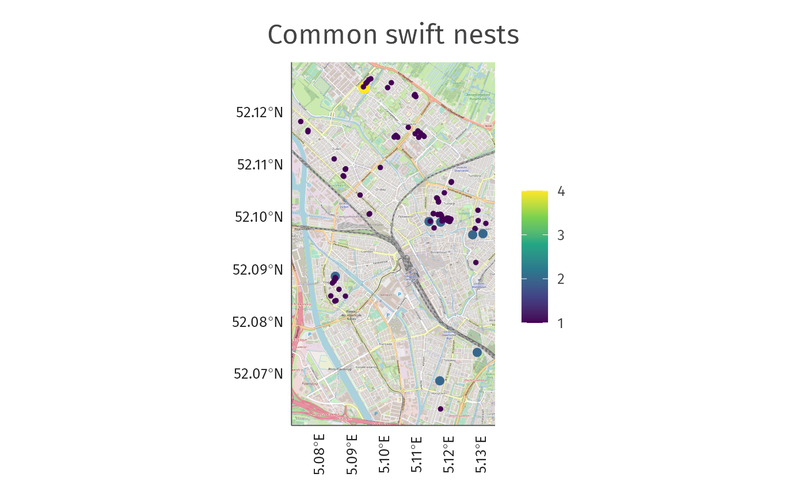
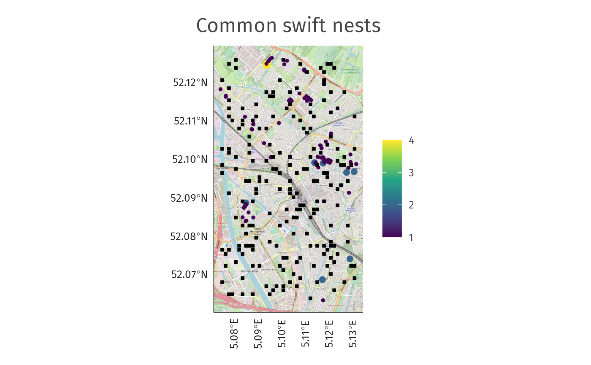
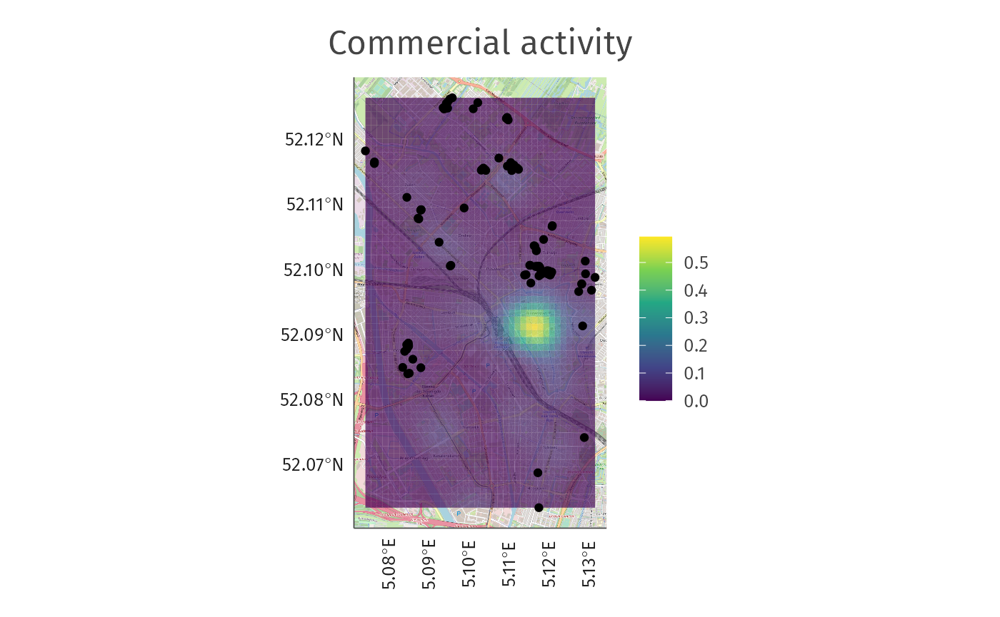
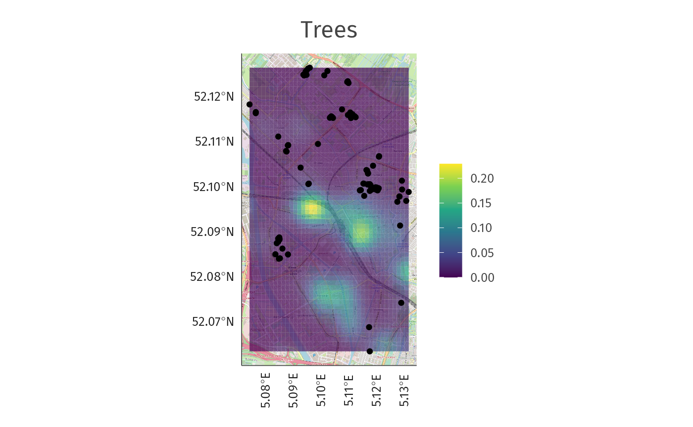
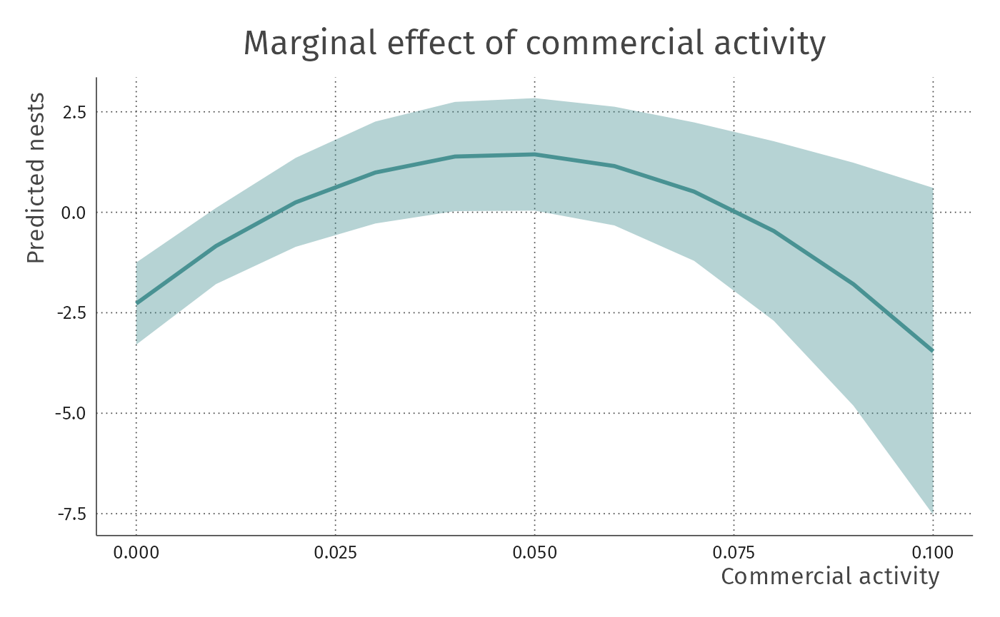
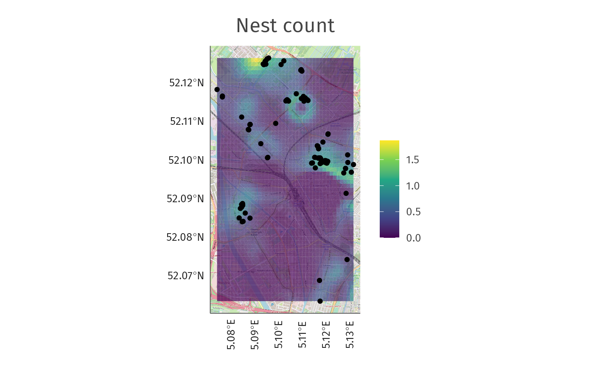
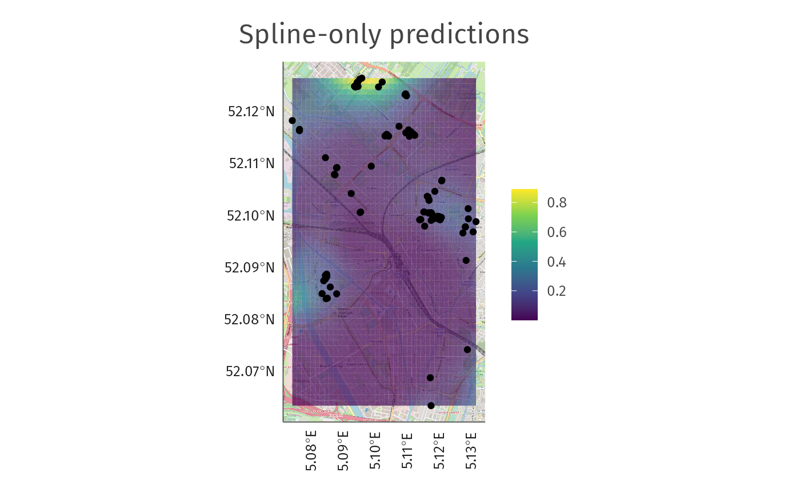

advanced_enrichment.RmdIn this advanced example, you will go through the steps of an example project to enrich data relative to the position of features (shops and natural features) within the city of Utrecht to predict the nesting behavior of swifts.
Libraries for data wrangling and enrichment:
Libraries for modeling:
# Modeling
library(mgcv)Libraries for plotting:
If you already followed the introductory tutorial, you will know that the osmenrich package offers the possibility of creating local instances of both the Overpass API, to serve an instance of OpenStreetMap (OSM) and of OSRM servers, to calculate the routing information.
If you already set up one of these options, you can set the connection variables running the following snippet (remember to change the port of the server(s) to your chosen one!):
# Optional: use local version of osm
#osmdata::set_overpass_url("http://localhost:8888/api/interpreter")
#options("osrm.server" = "http://localhost:8080")To demonstrate the usage of osmenrich, in this example you will use the dataset of swifts (a type of bird) provided openly by the municipality of Utrecht (The Netherlands).
data_url <- "https://ckan.dataplatform.nl/dataset/8ceaae10-fb90-4ec0-961c-ef02691bb861/resource/baae4cde-cf33-416b-aa4e-d0fba160eed9/download/gierzwaluwinventarisatie2014.csv"Once you downloaded the dataset, select only the relevant columns using the tidyverse syntax. In this example, you are interested in retrieving the latitude and longitude for each swift nest, and the number of nests (nestcount). You then need to convert the latitude and longitude coordinates to a spatial format using the st_as_sf from the sf package.
bird_sf <-
read_csv(data_url) %>%
drop_na(latitude, longitude, `aantal nesten`) %>%
st_as_sf(coords = c("longitude", "latitude"), crs = 4326) %>%
select(nestcount = "aantal nesten", geometry)To see how the swift data look like, you can plot the retrieved points using ggplot. The additional parameters are used to create a nice-looking plot but are not necessary for the creation of the map.
# Plot data
plot_bird <-
ggplot(bird_sf, aes(colour = nestcount, size = nestcount)) +
annotation_map_tile(zoomin = 0, progress = "none") +
geom_sf() +
theme_fira() +
scale_colour_viridis_c() +
scale_size(range = c(1, 3), guide = FALSE) +
theme(axis.text.x = element_text(angle = 90)) +
labs(title = "Common swift nests", colour = "")
plot_bird
Once you know how the data look like, a necessary step, given the dataset at hand is proceeding with data augmentation. However, you need to make some assumptions about the position of the birds, in order to have a working model later on. Thus, you can assume that: - The data contains all nests within Utrecht (“the common swift inventarisation is comprehensive over the grid”). - You can randomly sample the data over 200 non-bird sites and assume that those are realistic non-bird sites (i.e. have 0 nests counts).
You will use these sites in the prediction of actual bird sites.
set.seed(45)
bird_grid <- sf::st_make_grid(bird_sf, n = c(40, 60))
has_nests <- apply(sf::st_contains(bird_grid, bird_sf, sparse = FALSE), 1, any)
zerosample <- sf::st_centroid(sample(bird_grid[!has_nests], 200))
#> Warning in st_centroid.sfc(sample(bird_grid[!has_nests], 200)): st_centroid does
#> not give correct centroids for longitude/latitude data
nonbird_sf <- sf::st_sf(geometry = zerosample) %>% mutate(nestcount = 0)
bird_sf <- bind_rows(bird_sf, nonbird_sf)Once you augmented the data following these assumptions, you can plot the augmented data.
plot_bird +
ggplot2::geom_sf(data = nonbird_sf, colour = "black", bg = "black", size = 1, shape = 22)
Moving to the data enrichment, you need to make another set of assumptions concerning the behavior of swifts within Utrecht. You will assume the following:
Nesting behaviour is spatially correlated. We are more likely to find a nest close to other nests.
Common swifts benefit from commercial activity, but not too much. The birds need food but also they need peace. They are peaceful birds.
Nature is important to the common swift. The birds need trees to do bird things like sitting and nesting.
Given these assumptions, you can now use our package osmenrich to gather these data from sources such as OSM.
osmenrich for computing the data enrichmentAs stated above, you are now interested in retrieving a proxy of natural material availability and a proxy of commercial activity. For the sake of this example, you decide to retrieve trees and shops, as they represent a close enough proxy to natural materials and commercial activity.
To retrieve these OSM features, you will use the main function from osmenrich, enrich_osm(). In the code below we retrieve shops and trees within a radius of 1km (r = 1000). If you are interested in retrieving other data points, please refer to the official list of available features in OSM.
bird_sf <-
bird_sf %>%
enrich_osm(
name = "commercial_activity_1km",
key = "shop",
kernel = "gaussian",
r = 1000
) %>%
enrich_osm(
name = "tree_1km",
key = "natural",
value = "tree",
kernel = "gaussian",
r = 1000
)
#> ℹ Downloading data for commercial_activity_1km...
#> ✓ Downloaded data for commercial_activity_1km.
#>
#> ℹ Downloaded 1494 points, 0 lines, 0 polygons, 0 mlines, 0 mpolygons.
#> ℹ Computing measure matrix for commercial_activity_1km...
#> ✓ Computed measure matrix for commercial_activity_1km.
#>
#> ℹ Adding commercial_activity_1km to data.
#> ℹ Downloading data for tree_1km...
#> ✓ Downloaded data for tree_1km.
#>
#> ℹ Downloaded 1923 points, 0 lines, 0 polygons, 0 mlines, 0 mpolygons.
#> ℹ Computing measure matrix for tree_1km...
#> ✓ Computed measure matrix for tree_1km.
#>
#> ℹ Adding tree_1km to data.You also want to retrieve the same data points for a grid covering the bounding box of the data.
grid_sf_c <-
st_centroid(bird_grid) %>%
st_sf() %>%
enrich_osm(
name = "commercial_activity_1km",
key = "shop",
kernel = "gaussian",
r = 1000,
.verbose = TRUE
) %>%
enrich_osm(
name = "tree_1km",
key = "natural",
value = "tree",
kernel = "gaussian",
r = 1000,
.verbose = TRUE
)
#> Warning in st_centroid.sfc(bird_grid): st_centroid does not give correct
#> centroids for longitude/latitude data
#> ℹ Downloading data for commercial_activity_1km...
#> Request failed [429]. Retrying in 1 seconds...
#> ✓ Downloaded data for commercial_activity_1km.
#>
#> ℹ Downloaded 1493 points, 0 lines, 0 polygons, 0 mlines, 0 mpolygons.
#> ℹ Computing measure matrix for commercial_activity_1km...
#> ✓ Computed measure matrix for commercial_activity_1km.
#>
#> ℹ Adding commercial_activity_1km to data.
#> ℹ Downloading data for tree_1km...
#> ✓ Downloaded data for tree_1km.
#>
#> ℹ Downloaded 1865 points, 0 lines, 0 polygons, 0 mlines, 0 mpolygons.
#> ℹ Computing measure matrix for tree_1km...
#> ✓ Computed measure matrix for tree_1km.
#>
#> ℹ Adding tree_1km to data.And add the geometry to the grid, before plotting the results.
grid_sf_p <- grid_sf_c %>% st_set_geometry(bird_grid)Plotting the results of the data enrichment, it is easy to identify the points on the map that represent the larger concetration of shops and trees.
plot_commercial_activity <-
ggplot() +
annotation_map_tile(zoomin = 0) +
geom_sf(data = grid_sf_p, aes(fill = commercial_activity_1km), colour = NA, alpha = 0.7) +
geom_sf(data = bird_sf %>% filter(nestcount > 0), colour = "black") +
theme_fira() +
scale_fill_viridis_c() +
labs(title = "Commercial activity", fill = "") +
theme(axis.text.x = element_text(angle = 90))
plot_commercial_activity
#> Zoom: 14
plot_trees <-
ggplot() +
annotation_map_tile(zoomin = 0) +
geom_sf(data = grid_sf_p, aes(fill = tree_1km), colour = NA, alpha = 0.7) +
geom_sf(data = bird_sf %>% filter(nestcount > 0), colour = "black") +
theme_fira() +
scale_fill_viridis_c() +
labs(title = "Trees", fill = "") +
theme(axis.text.x = element_text(angle = 90))
plot_trees
#> Zoom: 14
Now that you have the data, you can create a model to predict the presence of other nests. To model the data we will use a zero-inflated poisson spatial generalized additive model.
First, you need to define a function to turn sf with coordinates into a df with x and y.
sf_to_df <- function(sf) {
bind_cols(
as_tibble(sf) %>% select(-geometry),
st_coordinates(sf) %>% as_tibble() %>% set_names(c("x", "y"))
)
}Then, define a generalized additive model with mgcv. This is what we suggest using, but many other options are possible (gaussian process regression, regression kriging, other smoothing techniques, …).
To see the effects of spline, commercial activity, and natural material availability, simply call:
summary(fit)
#>
#> Family: Zero inflated Poisson(1.672,0.844)
#> Link function: identity
#>
#> Formula:
#> nestcount ~ te(x, y, bs = "ts") + poly(commercial_activity_1km,
#> 2) + tree_1km
#>
#> Parametric coefficients:
#> Estimate Std. Error z value Pr(>|z|)
#> (Intercept) -6.523 1.094 -5.963 2.47e-09 ***
#> poly(commercial_activity_1km, 2)1 -319.973 101.346 -3.157 0.001593 **
#> poly(commercial_activity_1km, 2)2 -200.681 56.716 -3.538 0.000403 ***
#> tree_1km -27.490 16.178 -1.699 0.089269 .
#> ---
#> Signif. codes: 0 '***' 0.001 '**' 0.01 '*' 0.05 '.' 0.1 ' ' 1
#>
#> Approximate significance of smooth terms:
#> edf Ref.df Chi.sq p-value
#> te(x,y) 14.97 24 89.92 <2e-16 ***
#> ---
#> Signif. codes: 0 '***' 0.001 '**' 0.01 '*' 0.05 '.' 0.1 ' ' 1
#>
#> Deviance explained = 91.1%
#> -REML = 165.51 Scale est. = 1 n = 299You can also plot the marginal effect of commercial activity and check that birds are negatively affected by too little shops in the area (not enough food?) as well as too many (too many people?).
values <- seq(0, 0.10, 0.01)
plot_marginal <-
ggpredict(fit, terms = "commercial_activity_1km [values]",
condition = c(x = 5.10, y = 52.125)) %>%
ggplot(aes(x = x, y = predicted, ymin = conf.low, ymax = conf.high)) +
geom_ribbon(alpha = 0.4, fill = firaCols[3]) +
geom_line(colour = firaCols[3], size = 1) +
theme_fira() +
labs(y = "Predicted nests", x = "Commercial activity",
title = "Marginal effect of commercial activity")
plot_marginal
Finally, you can create predictions over previously defined grid.
pred <- predict(fit, newdata = sf_to_df(grid_sf_c), type = "response", se = TRUE)And plot these predictions over the grid.
grid_sf_p$pred <- pred$fit
grid_sf_p$se <- pred$se.fit
plot_pred <-
ggplot() +
annotation_map_tile(zoomin = 0) +
geom_sf(data = grid_sf_p, aes(fill = pred), colour = NA, alpha = 0.7) +
geom_sf(data = bird_sf %>% filter(nestcount > 0), colour = "black") +
theme_fira() +
scale_fill_viridis_c() +
labs(title = "Nest count", fill = "") +
theme(axis.text.x = element_text(angle = 90))
plot_pred
#> Zoom: 14
If you are interested in the spline, you can also only plot the spline.
grid_sf_c2 <-
grid_sf_c %>%
mutate(
commercial_activity_1km = 0,
grass_300m = 0,
tree_300m = 0
)
pred2 <- predict(fit, newdata = sf_to_df(grid_sf_c2), type = "response", se = TRUE)
grid_sf_p$pred2 <- pred2$fit
plot_pred_smooth_only <-
ggplot() +
annotation_map_tile(zoomin = 0) +
geom_sf(data = grid_sf_p, aes(fill = pred2), colour = NA, alpha = 0.7) +
geom_sf(data = bird_sf %>% filter(nestcount > 0), colour = "black") +
theme_fira() +
scale_fill_viridis_c() +
labs(title = "Spline-only predictions", fill = "") +
theme(axis.text.x = element_text(angle = 90))
plot_pred_smooth_only
#> Zoom: 14